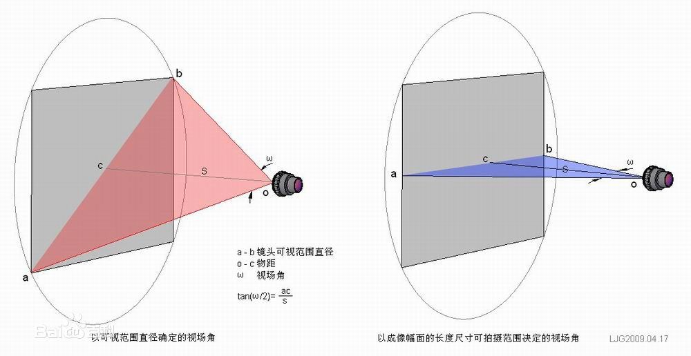

镜头各参数解释
更新日期:
焦距(f)
透镜光心到光聚焦点之间的距离。焦距大视角大，焦距小视角小。
接口
螺纹镜头有 C口\CS口，M12口，都有自己的特性，主要和机械加工和安装有关。
M12镜头: 镜头后口螺纹为12mm X 0.5mm
光圈(F)
镜头焦距和通光孔径比值，表征了光通量大小。F值越小，通光孔径越大，光通量也越大，通光量与F的平方成反比。
像面尺寸
镜头成像直径(CCD为对角线长度,镜头为直径)可覆盖的最大CCD芯片尺寸。1英寸= 16mm(不是25.4)，所以1/2’’ = 8mm。.镜面尺寸最好大于等于CCD尺寸，否则成像不全。
景深
被摄物体成像清楚后，在物体前后一定范围内移动，其影像依然清晰。景深和光圈，焦距，被摄物体距离都有关系。
视场角

定义如上图。视场角反应了光学仪器的视野范围。同时得注意镜头的水平视场角和垂直视场角可能是不一样的。